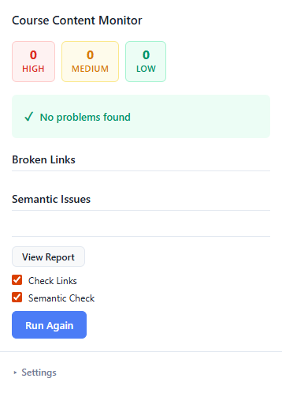
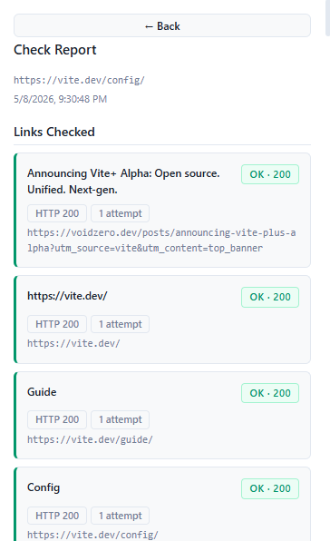

Link Checking
Scans every link on the page and flags broken or unreachable URLs, so you can fix dead ends before students hit them.
AutomatedVitalityCCM scans any course page in your browser — catching broken links and semantically outdated content before your students do.


One extension. Two scan modes. Five targeted checks — all surfaced directly in your browser without leaving the page.
Scans every link on the page and flags broken or unreachable URLs, so you can fix dead ends before students hit them.
AutomatedUses an LLM to detect outdated terminology, deprecated tools, and stale references — catching what a link check never could.
AI-PoweredEvery issue is labelled critical, warning, or info — so you know exactly what to fix first.
Each flagged issue includes a clear suggestion to speed up your review.
Run only link checks, only semantic checks, or both — giving you control over scope and API usage.
Add VitalityCCM from the Chrome Web Store. No account required to start.
Paste your OpenAI API key into the extension settings to unlock semantic checks.
Click the extension icon, choose your scan mode, and get a full report in seconds.